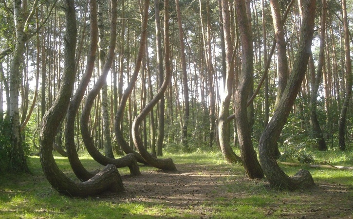
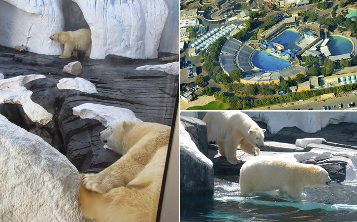

O enigma da Crooked Forest, na Polônia
Centenas de árvores crescem com uma curva que ainda intriga pesquisadores e visitantes.
Em destaque

Centenas de árvores crescem com uma curva que ainda intriga pesquisadores e visitantes.

Uma história sobre vínculos animais, memória e os relatos que cercaram o SeaWorld.
Arquivo recente